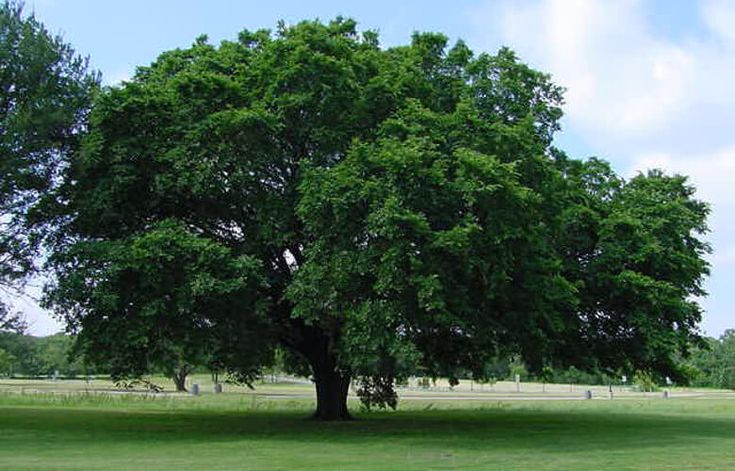

The land that today makes up North Dakota became U.S.territory as part of the Louisiana Purchase of 1803. The region was originally part of the Minnesota and Nebraska territories, until, along with South Dakota, it was organized into the Dakota Territory in 1861. The state was very sparsely populated until the arrival of the railroads in the late 1800s, and finally became a state in 1889. During the run-up to statehood, there was an intense rivalry between North and South Dakota over which state would be admitted to the union first. When the time came for their formal admission, President Benjamin Harrison selected at random which bill to sign first and did not record the order in which the bills were signed, though North Dakota is traditionally listed first. The state is renowned for its scenic “badlands,” which are part of the Theodore Roosevelt National Park.
| Date of Statehood | Capital | Population | Size |
|---|---|---|---|
| November 2, 1889 | Bismarck | 779,094 | 70,704 square miles |
Liberty and Union Now and Forever, One and Inseparable
Wild Prairie Rose
Western Meadowlark
American Elm
Interesting facts